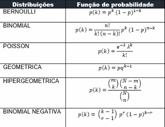

AULA 9: Probabilidades: Distribuição Binomial e Poisson
Binômio
O Teorema do Binômio, ou Binômio de Newton, é uma ferramenta poderosa para expandir expressões da forma (a + b)n.
O desenvolvimento do termo geral do binômio de Newton é dado pela fórmula:
(a + b)n = Σk=0n C(n, k) an-k bkOnde C(n, k) é o coeficiente binomial, que pode ser calculado como:
C(n, k) = n! / [k! (n-k)!]Poisson
A distribuição de Poisson é uma distribuição de probabilidade discreta que expressa a probabilidade de um determinado número de eventos ocorrer em um intervalo fixo de tempo ou espaço, dado que esses eventos ocorrem com uma taxa média conhecida e independentemente do tempo desde o último evento.
P(X = k) = (λk e-λ) / k!Fatorial
O fatorial de um número inteiro não negativo n, denotado por n!, é o produto de todos os inteiros positivos até n. A definição é:
n! = n × (n-1) × (n-2) × ... × 1Propriedades do fatorial:
- Recursividade: a relação recursiva é dada por: n! = n × (n-1)! – Isso nos ajuda a calcular fatoriais maiores a partir dos menores.
- Crescimento: o fatorial cresce muito rapidamente à medida que n aumenta. Esses conceitos são fundamentais em combinatória, probabilidade e análise matemática.
Por que se considera que 0! = 1?
- Essa definição é útil em várias áreas da matemática, especialmente em combinações e permutações.
- A razão por trás disso é que existe exatamente uma maneira de organizar zero elementos: não fazendo nada. Além disso, a fórmula que define o fatorial de um número inteiro positivo n! pode ser expressa recursivamente como n! = n × (n-1)!
- Se aplicarmos isso para n = 1: 1! = 1 × 0! Para que essa equação seja verdadeira, precisamos que 0! = 1.
Potência: por que todo número elevado a zero é igual a um?
- Todo número elevado a zero é igual a um porque, ao considerar a definição de potências, temos: an / an = an-n = a0.
- Por outro lado, sabemos que qualquer número dividido por ele mesmo (exceto zero) é igual a um: a / a = 1. Portanto, concluímos que a0 = 1.
- Essa convenção se aplica para qualquer número real a, exceto quando a = 0, pois 00 é indeterminado em muitos contextos.
Constante de Euler e
A constante de Euler é aproximadamente igual a 2,718281... e é uma base importante em matemática, especialmente em cálculo e análise. Ela surge naturalmente em várias situações, como no cálculo de juros compostos e na solução de equações diferenciais. Uma das definições mais comuns de e é através da série infinita:
e = Σn=0∞ 1 / n! = 1 + 1/1! + 1/2! + 1/3! + ...EXERCÍCIOS:
-
Em uma rede de computadores, sabe-se que 15% dos servidores estão suscetíveis a falhas críticas durante uma atualização de software. Se selecionarmos 20 servidores ao acaso, qual a probabilidade de que pelo menos 5 deles apresentem falhas críticas?
Dados: Seja X o número de servidores com falha.
Sabemos que X ~ Binomial (n = 20, p = 0,15).
Calcule: P(X ≥ 5)P(X = 0) = C(20,0) × 0,150 × 0,8520 ≅ 0,0387Conclusão: A probabilidade de que pelo menos 5 servidores apresentem falhas é de 17,33%.
P(X = 1) = C(20,1) × 0,151 × 0,8519 ≅ 0,1365
P(X = 2) = C(20,2) × 0,152 × 0,8518 ≅ 0,2291
P(X = 3) = C(20,3) × 0,153 × 0,8517 ≅ 0,2427
P(X = 4) = C(20,4) × 0,154 × 0,8516 ≅ 0,1797
P(X ≤ 4) = 0,0387 + 0,1365 + 0,2291 + 0,2427 + 0,1797 = 0,8267
P(X ≥ 5) = 1 - P(X ≤ 4) = 1 - 0,8267 = 0,1733 = 17,33% -
Em um sistema de transmissão de pacotes, a taxa média de pacotes com erro é de 0,3 por segundo. Qual é a probabilidade de que, em um segundo, sejam observados:
Seja X ~ Poisson (λ = 0,3).-
a) Exatamente dois pacotes com erro?
P(X = 2) = (0,32 × e-0,3) / 2! ≅ 0,09 × 0,741 / 2 = 0,0333 = 3,33% -
b) Exatamente um pacote com erro?
P(X = 1) = (0,31 × e-0,3) / 1! ≅ 0,3 × 0,741 / 1 = 0,2223 = 22,23% -
c) Nenhum pacote com erro?
P(X = 0) = (0,30 × e-0,3) / 0! = 1 × 0,741 / 1 = 0,741 = 74,10%
-
a) Exatamente dois pacotes com erro?
CURIOSIDADES:
 Fonte: Geokrigagem, 2025
Teorema de Bayes
O Teorema de Bayes é uma das ferramentas mais importantes na estatística e na teoria da probabilidade. Ele fornece um método para atualizar a probabilidade de uma hipótese à medida que novas evidências se tornam disponíveis.
1. Definição do Teorema de Bayes
P(A|B) = [P(B|A) × P(A)] / P(B)- A, B → eventos
- P(A|B) → probabilidade de A se B for verdade
- P(B|A) → probabilidade de B se A for verdade
- P(A), P(B) → probabilidades independentes de A e B
2. Aplicações do Teorema de Bayes
- Medicina: Diagnóstico médico e interpretação de testes.
- Machine Learning: Algoritmos como Naive Bayes, usados para classificação e previsão.
- Ciência Forense: Avaliação da evidência em investigações criminais.
- Economia e Finanças: Modelagem de incertezas em mercados financeiros.
3. Vantagens e Desvantagens
- Vantagens: Permite incorporar novas evidências; Flexível e aplicável em diversas áreas.
- Desvantagens: A seleção das probabilidades anteriores pode ser subjetiva; Pode ser computacionalmente intensivo para modelos complexos.